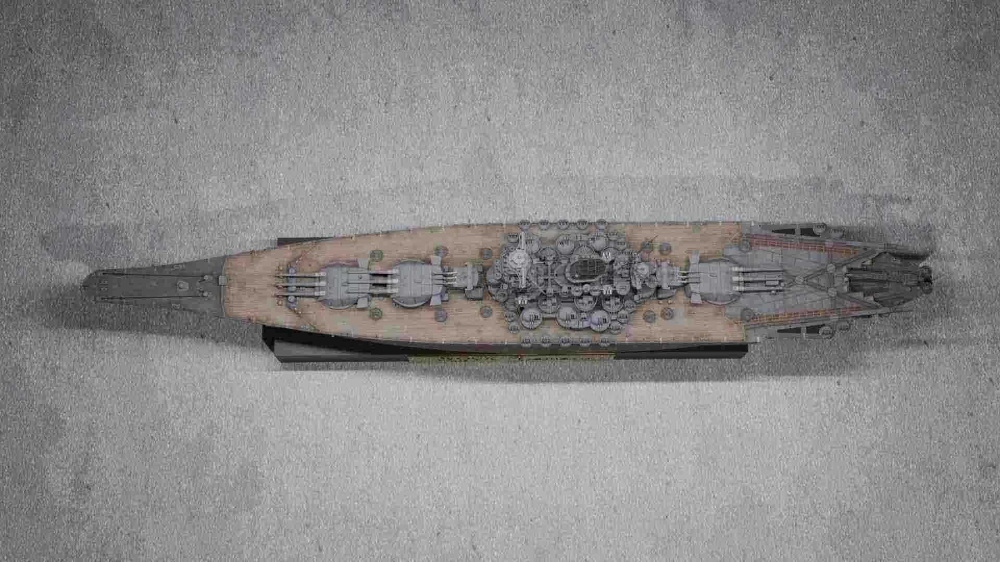
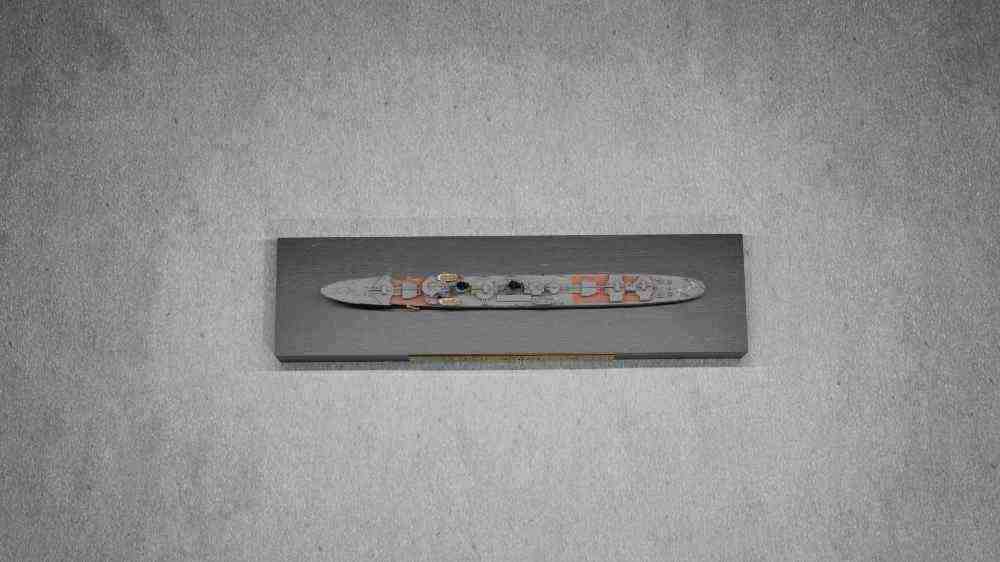
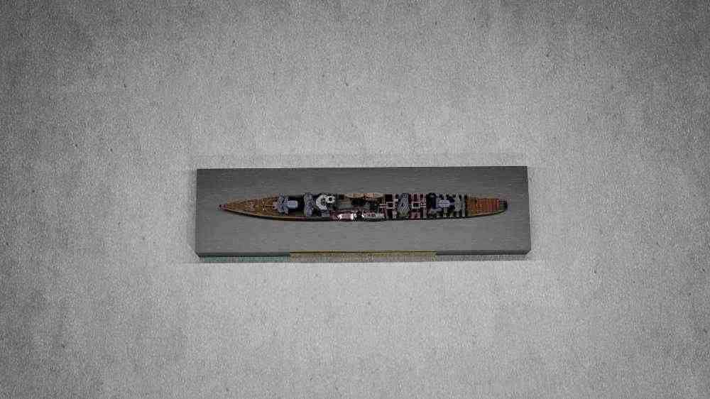
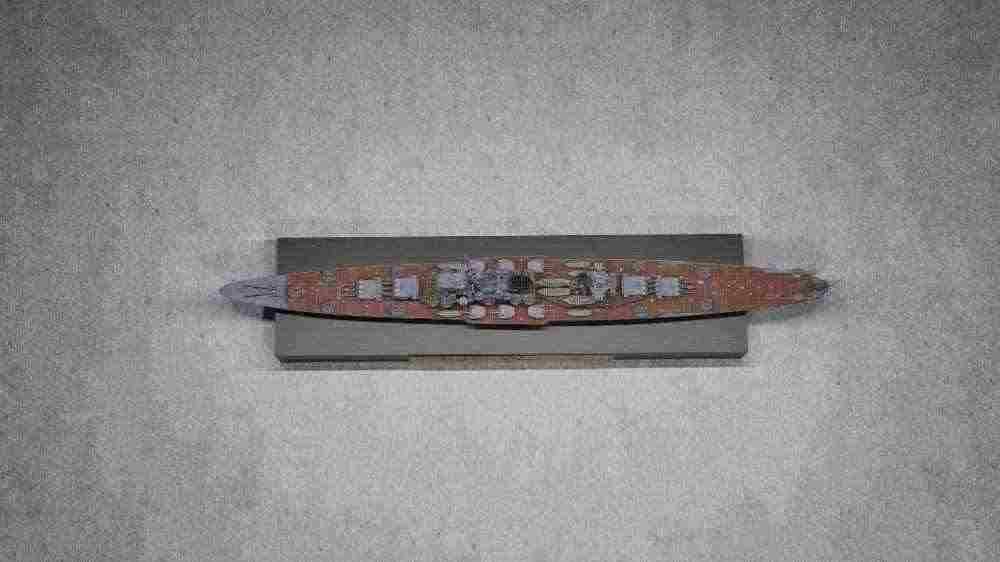
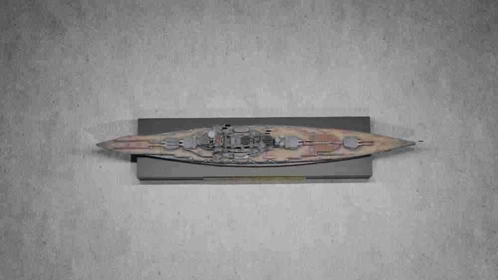

ITEM-01は幅60cm×奥行50cm×高さ30cmの低セキュリティ保管ロッカーに収容されます。ITEM-01の外見的特徴について少なくとも週に一度の目視確認による記録が義務付けられており、確認を行う職員は一度につき1名に限られます。
ITEM-01に関連する全記録は紙または電子媒体での複製を除外サイト-██に送信し、保存してください。また、ITEM-01に関連する記録については文書管理部門が定期的に確認を行い、最新の記録と以前の記録の矛盾点を担当者に指摘してください。
矛盾が発見された場合、それはITEM-01の異常性によるものであり記録の修正を行うことなく最新の記録を正とする方針です。実験を行う際は担当者の許可が必要です。
ITEM-01は、1/700スケールの精密艦船模型（ITEM-01-A）と黒色の木製台座（ITEM-01-B）で構成されています。ITEM-01-B正面には金属製のプレートが埋め込まれており、「IJN Yamato」と刻印されています。ITEM-01-Aの現時点での外見的特徴は戦艦大和と一致します。
ITEM-01-A、ITEM-01-Bに対していかなる物理的・化学的改造を施すことはできません。塗料・接着剤・溶剤は表面に付着せず、切削工具は形状を変化させることはできません。また、ITEM-01は自身の名前、外見、来歴を記録する文書及び写真を改変する異常性を持ちます。
ITEM-01に関する資料はこれまで「ITEM-01が示す艦艇が原始的な構造を持つ」「ITEM-01が沈没した」などの誤った情報に改変されています。
ITEM-01に関連する実験記録は記述が追加されるたびに除外サイト-██の内部サーバーへ保存されていますが、除外サイト-██に保管された記録においても同様の矛盾が報告されています。現在除外サイト-██のシステム不具合の可能性について調査が行われています。
除外サイト-██のシステム調査の結果、不具合は確認されなかったことを受け、ITEM-01の異常性が現在把握されているものとは大きく乖離している可能性が一部研究員によって指摘されています。現在、担当者の要請によりITEM-01の異常性の再評価のために実験01-7が計画されています。
それに伴って現在大日本帝国に所属する、または所属していた艦艇・███についての文書及び写真を除外サイト-██に輸送してください。ITEM-01に関連する文書及び写真についても引き続き除外サイト-██に保管してください。



